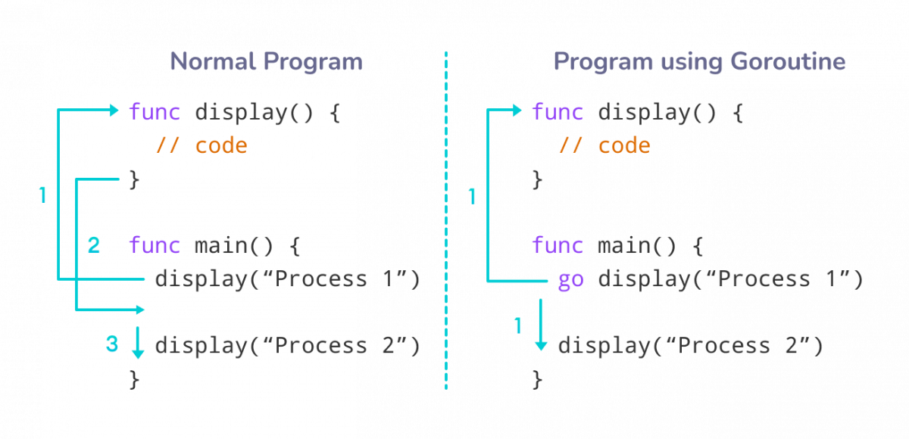

Что такое горутины?
Горутины — это одна из самых мощных функций языка Go. Они позволяют выполнять задачи параллельно, используя ключевое слово go. В отличие от традиционных потоков, горутины являются лёгковесными и требуют меньше ресурсов, что делает их идеальными для высоконагруженных систем.
Параллельное выполнение задач помогает повысить производительность программ, особенно в многопроцессорных системах. Go предоставляет встроенные механизмы для синхронизации между горутинами, такие как каналы, которые позволяют безопасно обмениваться данными между ними.
Преимущества использования горутин
- Лёгкость в использовании: Запуск горутины требует всего лишь добавления ключевого слова
go. - Меньше затрат ресурсов: Горутины используют значительно меньше памяти по сравнению с потоками.
- Удобная синхронизация: Использование каналов упрощает обмен данными между горутинами.
Пример использования горутин
package main
import (
"fmt"
"time"
)
func printMessage(msg string) {
for i := 0; i < 5; i++ {
fmt.Println(msg)
time.Sleep(500 * time.Millisecond)
}
}
func main() {
go printMessage("Привет из горутины!")
printMessage("Привет из main!")
}
В этом примере мы создаем функцию printMessage, которая выводит сообщение несколько раз с задержкой. Мы запускаем эту функцию как горутину, чтобы она выполнялась параллельно с основной функцией main.
Объяснение кода
| Строка кода | Описание |
|---|---|
go printMessage("Привет из горутины!") |
Запускает функцию как горутину. |
printMessage("Привет из main!") |
Запускает функцию в основном потоке. |
time.Sleep(500 * time.Millisecond) |
Создает задержку в 500 миллисекунд между выводами сообщения. |
Выводы
Данный пример демонстрирует, как легко можно запустить горутину и выполнять задачи параллельно. Использование горутин значительно упрощает разработку многопоточных приложений и позволяет эффективно использовать ресурсы системы.
Заключение
Горутины являются одним из ключевых элементов языка Go, которые делают его уникальным и мощным инструментом для разработчиков. Их простота и эффективность позволяют создавать высокопроизводительные приложения с минимальными затратами на ресурсы. Понимание и умелое использование горутин открывает новые горизонты в разработке программного обеспечения.